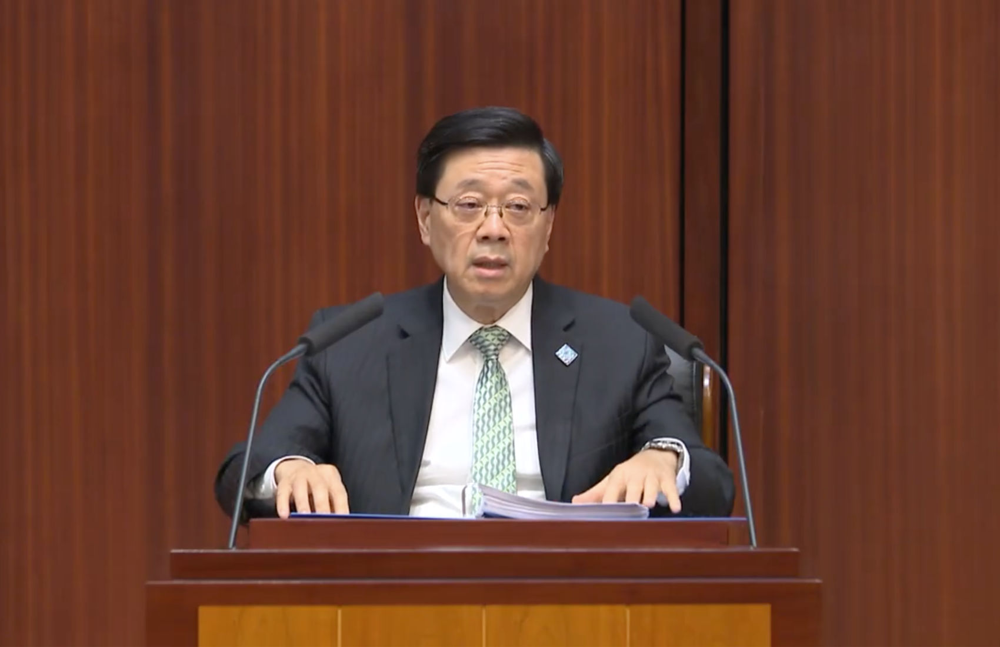
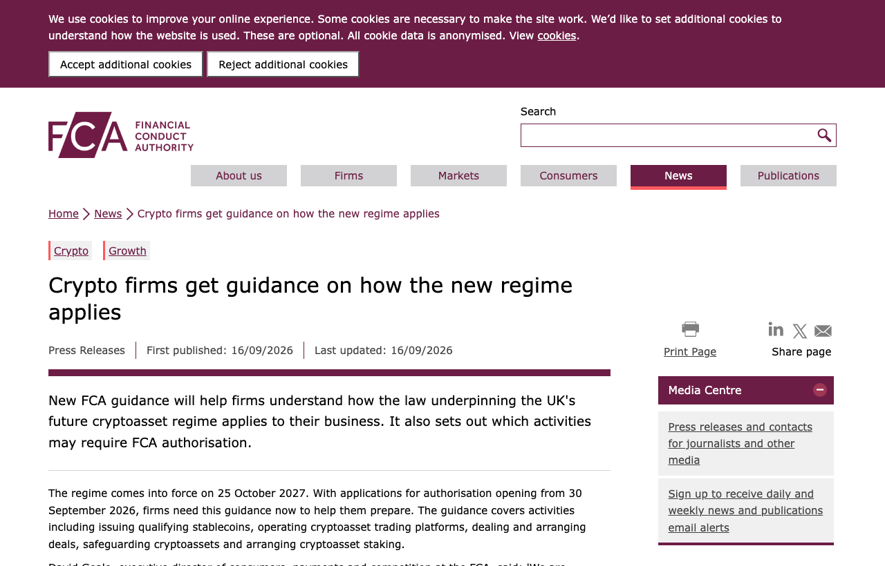

01 기관 참여와 상품 이번 호 머리기사
블랙록, 홍콩서 첫 토큰화 유동성 펀드 승인
블랙록이 홍콩 증권선물위원회(SFC)에서 HKD 기반 토큰화 유동성 펀드 승인을 받았다. 홍콩과 아시아태평양에서 블랙록의 첫 토큰화 펀드이며, 개인 투자자도 포함한다.
Weekly Digital Asset Brief
홍콩과 영국이 제도를 먼저 손보며, 자본시장 인프라는 토큰화 자산을 실제 결제·정산에 붙이는 단계로 더 깊이 들어갔다. 홍콩은 도매 CBDC와 토큰화 예금 결제 시험을 밀고, 블랙록의 토큰화 유동성 펀드 승인까지 내주며 기관 상품을 제도 안으로 들였다. 유럽 쪽에서는 Partior와 LSEG가 24시간 은행 간 정산과 다중은행 유동성 체계를 시험해, 국경 간 결제 공백을 줄이려는 움직임이 이어졌다. 미국은 상원에서 시장구조 법안이 멈췄지만, 하원 위원회가 첫 디지털 자산 세법안을 통과시켜 세무 규칙부터 정리하려는 흐름을 보였다. 이번 주는 국내외 모두 토큰화 상품보다 결제·정산과 인허가 절차가 먼저 굳어지는지 확인해야 한다.

Editor's Pick
01 기관 참여와 상품 이번 호 머리기사
블랙록이 홍콩 증권선물위원회(SFC)에서 HKD 기반 토큰화 유동성 펀드 승인을 받았다. 홍콩과 아시아태평양에서 블랙록의 첫 토큰화 펀드이며, 개인 투자자도 포함한다.
06 규제와 정책
“이 제도는 2027년 10월 25일부터 시행된다.”
02 자본시장 인프라
“홍콩금융관리국은 연말까지 도매 CBDC를 내놓고 토큰화 예금의 은행 간 결제를 24시간 처리할 계획이다.”
토큰증권과 디지털자산 수탁, 청산·결제와 예탁, 전자등록, CBDC와 예금토큰처럼 자본시장의 바탕을 이루는 제도와 시스템의 변화입니다.
02 Ledger Insights 보도일 2026.09.17
“홍콩금융관리국은 연말까지 도매 CBDC를 내놓고 토큰화 예금의 은행 간 결제를 24시간 처리할 계획이다.”

0203 Ledger Insights 보도일 2026.09.17
Partior와 런던증권거래소그룹은 DiSH를 연계해 은행 간 정산 잔액을 24시간 처리하는 구조를 시험하고 있다.
“이 연계는 Partior의 결제은행들이 양자 간 잔액을 한데 모아 24시간 서로 정산하게 한다.”
04 Markets Media 보도일 2026.09.17
Ondo Finance의 자회사 Oasis Pro Markets가 DTCC의 Fund/SERV 회원이 됐다.
“Oasis Pro Markets는 이제 펀드별 개별 연동 없이 Fund/SERV를 통해 펀드사와 자산관리 플랫폼, 서비스 제공업체와 거래할 수 있다.”
05 Markets Media 보도일 2026.09.18
LSEG DiSH와 Partior는 여러 결제은행에 걸친 정산 유동성을 24시간 관리하는 구조를 시험 중이다.
“참여 은행은 여러 결제은행에 걸친 정산 유동성을 24시간 관리하고, 영업시간 밖에는 필요했던 사전 예치 노스트로 구조를 줄일 수 있다.”
기관 투자자의 참여, 상장지수상품의 승인과 출시, 수탁사·운용사의 사업 진출, 합작과 시범 사업처럼 시장의 구조가 바뀌는 사건입니다. 가격 움직임은 다루지 않습니다.
01 Ledger Insights 보도일 2026.09.15
블랙록이 홍콩 증권선물위원회(SFC)에서 HKD 기반 토큰화 유동성 펀드 승인을 받았다.
“Standard Chartered는 이 펀드에서 수탁과 운용, 신탁관리, 토큰화 업무를 맡는다고 밝혔다.”
법령과 시행령, 감독지침, 과세와 회계, 인가와 제재 등 국내외 당국이 확정한 규칙의 변화입니다.
06 영국 금융행위감독청 보도일 2026.09.16
영국 금융행위감독청(FCA)이 새 암호자산 제도가 사업자에 어떻게 적용되는지 안내를 내놨다.
“이 제도는 2027년 10월 25일부터 시행된다.”

0607 PYMNTS 가상자산 보도일 2026.09.16
미국 상원이 Digital Asset Market Clarity Act를 다음 단계로 넘기지 못했다.
“미 상원은 디지털 자산 시장 명확성 법안(Digital Asset Market Clarity Act)을 진전시키는 데 실패했고, 이는 암호화폐의 가장 큰 질문 가운데 하나인 "도대체 누가 여기서 책…”
08 PYMNTS 가상자산 보도일 2026.09.16
미국 하원 세입위원회가 Digital Asset Tax Certainty Act를 9월 16일 통과시켰다.
“보고서에 따르면 세입위원회는 해당 법안을 38대 5 표결로 통과시켰으며, 반대한 쪽은 민주당 의원 5명이었다.”